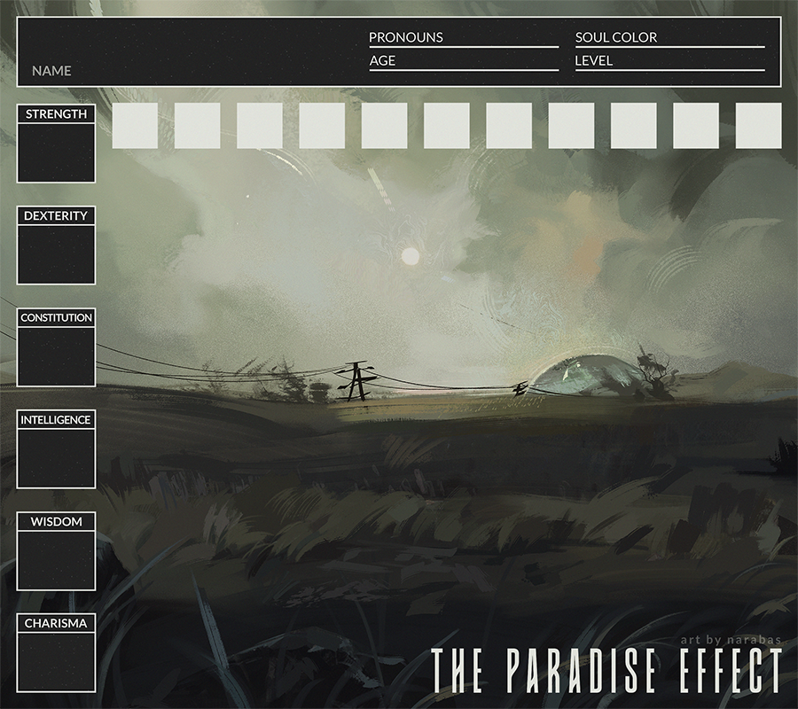

Requirements
In order to apply for this campaign, you'll need to complete both parts of the application and post them somewhere that you can externally link them, such as DeviantArt, Tumblr, Dropbox, Toyhouse, Google Docs, etc. If you need help finding somewhere you can post them, feel free to reach out to your GM and they'll get you set up!Keep in mind that this isn't a first come, first serve Campaign. In the event that the number of applications surpasses the number of open slots for the Campaign, participants will then be chosen by the GM based on which characters they feel will best fit the Campaign itself.
Good luck!
VISUAL APP
Character art on applications can be your own, commissioned, or colored lineart as long as proper credit is given.
WRITTEN APP
Name: The name they currently go by.
Name Meaning: The meaning of the name itself, if any, and also why they were named that/named themselves that.
Former Names: Any names they used to be called.
Gender: How they identify.
Pronouns: What are acceptable and preferred pronouns for them.
Starting Age: The age they were when the campaign started.
Current Age: The age they are now. It will be the same as the Starting Age currently.
Last Bio Update: The date you last updated the bio.
Stats: An assigned value for all six stats (Strength, Dexterity, Constitution, Wisdom, Intelligence, Charisma), with a max of 10 per stat. Everyone starts with 25 total points to spend on their stats, with more to be gained during the course of the campaign. More information on stats can be found on the Gameplay Mechanics page.
Soul Class: At the start of the campaign, this should be filled out as Unknown or N/A. Please don't tell me, the GM, which Soul Class you prefer for your character, or which one that you believe they will be! I'd rather not be influenced when it comes to making Soul Class decisions if I can help it.
Soul Level: At the start of the campaign, this should be filled out as 0.
Soul Shade: This shouldn't be filled out until the very end of the campaign, once you've found your Soul Partner(s), but it's nice to have a space for it nonetheless.
Soul Partner(s): At the start of the campaign, this should be filled out as Unknown or N/A.
Strengths: List 3 things your cat is good at. Make sure they have practical applications.
Weaknesses: List 3 things your cat is bad at. Make sure they have practical applications.
Height/Weight: Can be listed in actual terms (9"/ 9 lbs) or loose terms (Average/Average).
Appearance: No length requirement, but please try to include a little about their build, pelt, colors, eyes, and scars. You can break this up into multiple sections if you prefer.
Accessories: What kind of accessories they have, if any at all.
Health: A snapshot of what their overall health is like.
Disabilities: List any disabilities they have, whether physical or mental, and how they affect the character.
Personality: Can be listed traits (3 positive, 3 neutral, 3 negative), or written with at least 2 to 3 sentences. You can do both, too.
Family: All known and unknown immediate family. Please specify if any of these family members are going to be played by someone seeking to join the campaign.
Friends & Enemies: Any known friends and enemies outside of your character's family. Please specify if any of these friends or enemies are going to be played by someone seeking to join the campaign.
Love Life: Any crushes? Dating? Exes? Current romantic partners? List it here. Please specify if any of these current/past romantic interests are going to be played by someone seeking to join the campaign.
History: Your character's history, which should end with them falling asleep after finding the star fragment, and hearing that voice in their dreams. Please summarize and/or bullet point the history in another section if you personally feel like it's too long as is.
Exclusions: Any characters or events in your character's backstory that you want to have excluded from GM use throughout the Campaign. This will not affect your admission into the Campaign, and you can have as many or as little as you want.
Writing Sample: Just an example of your writing. It doesn't have to be the character you're applying with, and it doesn't have to be long.
Feel free to elaborate as much as you want on any section, and to add more sections, or move sections around with formatting. Have fun with it! I can't wait to see the kinds of characters you guys apply with.